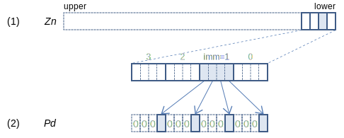
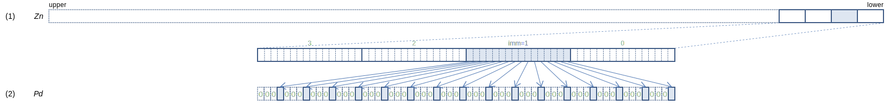

SVE Instruction List by Dougall Johnson
PMOV (to predicate): Move predicate from vector
PMOV Pd.S, Zn[imm] (SVE2.1 (SME2.1
128-bit SVE
On 128-bit SVE, read 4 bits from within the low 16 bits of a vector register (2), starting from bit 4 * imm, and write them to the predicate bits in (2) corresponding to 32-bit elements, zeroing all other bits.
256-bit SVE

On 256-bit SVE, read 8 bits from within the low 32 bits of a vector register (2), starting from bit 8 * imm, and write them to the predicate bits in (2) corresponding to 32-bit elements, zeroing all other bits.
512-bit SVE
On 512-bit SVE, read 16 bits from within the low 64 bits of a vector register (2), starting from bit 16 * imm, and write them to the predicate bits in (2) corresponding to 32-bit elements, zeroing all other bits.
Larger sizes
1024-bit SVE
On 1024-bit SVE, read 32 bits from within the low 128 bits of a vector register (2), starting from bit 32 * imm, and write them to the predicate bits in (2) corresponding to 32-bit elements, zeroing all other bits.
2048-bit SVE
On 2048-bit SVE, read 64 bits from within the low 256 bits of a vector register (2), starting from bit 64 * imm, and write them to the predicate bits in (2) corresponding to 32-bit elements, zeroing all other bits.
Report mistakes or give feedback
Inspired by and based on the x86/x64 SIMD Instruction List by Daytime.